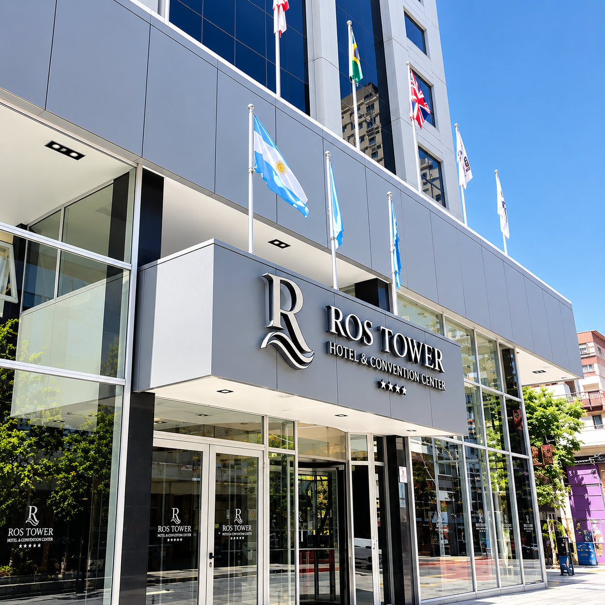
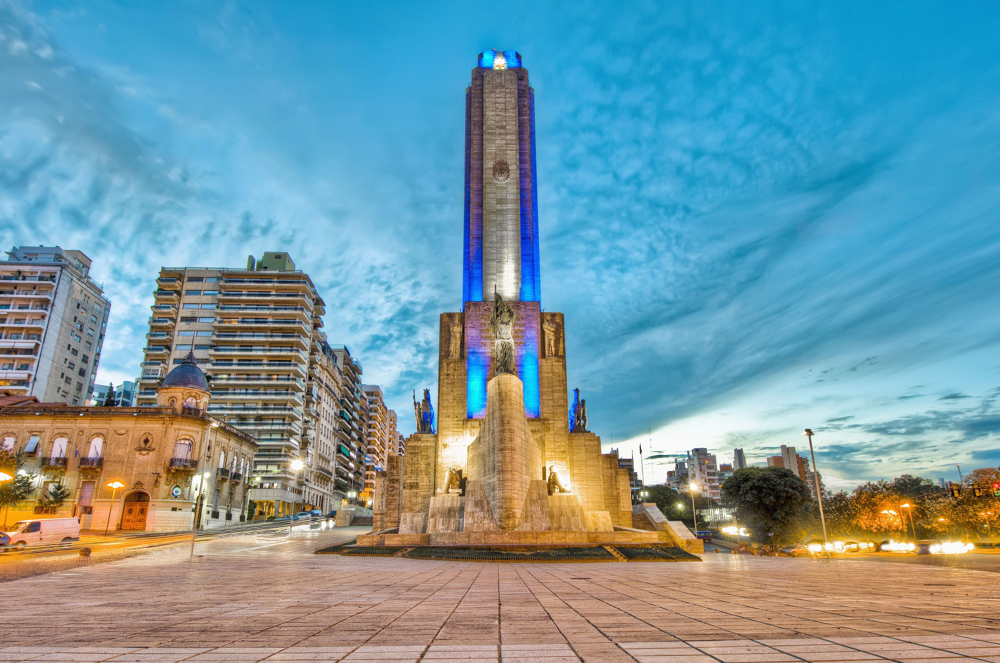
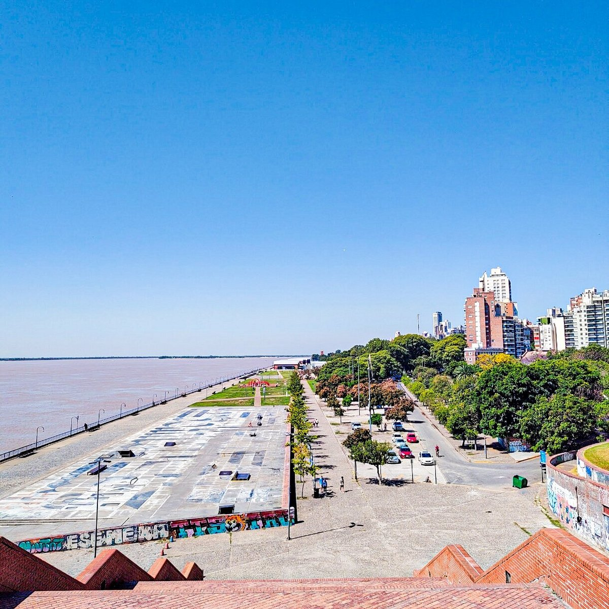
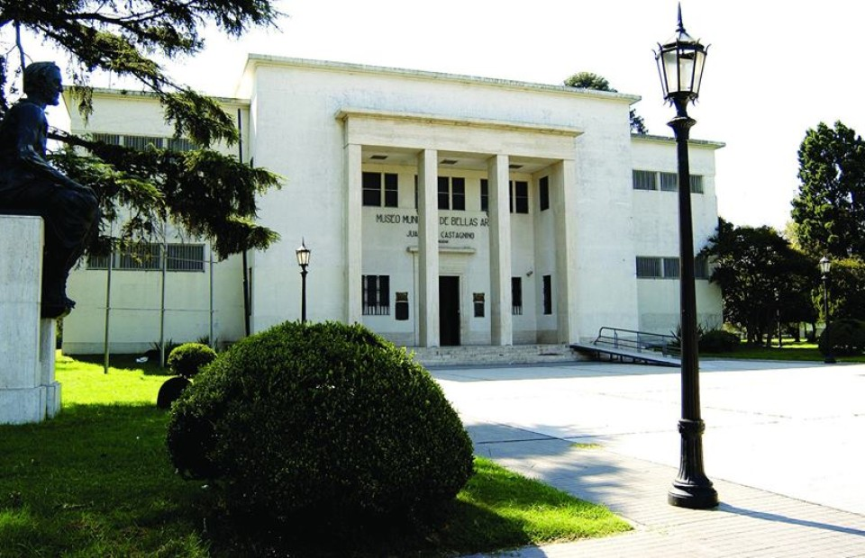
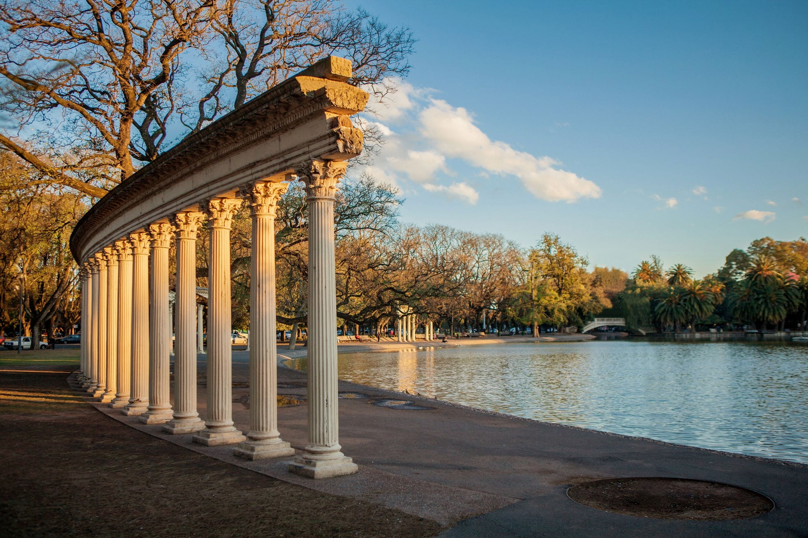

Hospedaje y Ciudad
Todo lo que necesitás para planificar tu estadía: hoteles recomendados, paseos cercanos a la sede y la mejor gastronomía rosarina.
Hospedaje
Desde hoteles boutique en el microcentro hasta cadenas internacionales frente al río, Rosario tiene opciones para todos los perfiles y presupuestos.

Ros Tower Hotel Spa & Convention Center
Alojate directamente en la sede del congreso. Descuento preferencial y cupos bloqueados para los asistentes del evento.
Otras opciones cercanas sugeridas
Holiday Inn Express
Microcentro / Río
Ubicado a pocos metros del mítico y tradicional Bv. Oroño. A solo 300 metros de las barrancas del Río Paraná.
Ver tarifas webHoward Johnson
Microcentro
Situado en el centro de la ciudad. Cercano a tiendas y restaurantes (paseo gastronómico Pellegrini y Shopping del Siglo).
Ver tarifas webUrquiza Apart Hotel & Suites
Zona centro
Ubicado en el centro de la ciudad. El Urquiza Apart Hotel & Suites se encuentra a 550 metros del tradicional Paseo del Siglo.
Ver tarifas webLugares de interés
Entre charla y charla, o al finalizar la jornada, Rosario tiene mucho para mostrar. Puntos imperdibles a pocos minutos de la sede:

Monumento a la Bandera
A 1,2 km de la sede
Es la obra más emblemática de Rosario. Está a pasos del río y se conecta al casco histórico a través del Pasaje Juramento, ocupando el sitio donde en 1812 Manuel Belgrano izó por primera vez la bandera argentina.

Costanera y Balnearios
A 200 m (frente al hotel)
Parque España, terrazas panorámicas y senderos peatonales frente a las islas del Paraná.

Museo Municipal de Bellas Artes Juan B. Castagnino
A 3,3 km de la sede
Ubicado en la esquina de Bv. Oroño y Av. Pellegrini, frente al Parque de la Independencia en Rosario. Es considerado uno de los museos de arte más importantes del país.

Parque de la Independencia
A 4,3 km de la sede
El espacio verde más tradicional, con jardines, un lago y museos. (Entrada gratuita)
Dónde comer
Rosario tiene una escena gastronómica que va desde la parrilla clásica hasta propuestas gourmet a la vera del río. Opciones recomendadas cercanas al Ros Tower:
Restaurantes & Parrillas
-
[Don Ferro — Parrilla]Un clásico de Rosario frente al río • Zona Río / A 1,5 km
-
[La Estancia — Parrilla Clásica]Cortes tradicionales argentinos • Centro / A 2,5 km
-
[FILIPPA'S — Cocina Italiana]Pastas y pizza estilo Italiano • A 2,4 km
Bares & Cervecerías
-
[Antares Pichincha]Cerveza artesanal y tapas • Pichincha / A 2,2 km
-
[Rock & Feller’s (Bv. Oroño)]Coctelería y terraza nocturna • Costanera / A 2,3 km
-
[Bar El Cairo]Picadas y vermut rosarino • a 1,6 km
Cafeterías & Helados
-
[Café y té]Café Charlotte Centro • A 1,5 km
-
[Heladería Tradicional]Giandugia Gelateria • A 2,2 km
-
[Café y Brunch]Brunch Pichincha • A 1,6 km